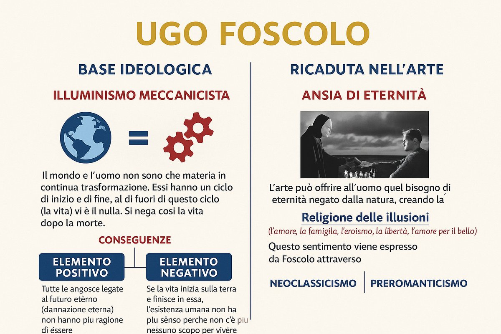

La poetica
La poesia, per Foscolo, non è ornamento né intrattenimento. È l'unico strumento che l'uomo possiede per resistere al nulla. Questa affermazione va presa sul serio, non come metafora: Foscolo crede genuinamente che la parola poetica abbia una funzione salvifica che nessun'altra forma di discorso — né la filosofia, né la scienza, né la religione — può svolgere allo stesso modo.
La ragione sta nel modo in cui la poesia tratta il tempo. Tutto è destinato all'oblio: le persone, le azioni, persino le civiltà. Ma la parola del poeta può sottrarre qualcosa a questo oblio, non con l'inganno ma con la forza della forma. Un sonetto ben costruito sopravvive al poeta che l'ha scritto, sopravvive alla situazione che l'ha generato, diventa un «sepolcro simbolico» in cui la memoria rimane viva anche quando tutto il resto è scomparso. I Sepolcri elaborano questa idea su scala civile: non sono le tombe di pietra che conservano la memoria degli eroi, ma i canti dei poeti che le celebrano. Omero sopravvive a Troia.
Il poeta ha quindi un compito che non è solo estetico ma etico: custodire ciò che merita di essere ricordato, dare forma al dolore in modo che diventi comunicabile, trasformare l'esperienza privata in qualcosa che appartiene a tutti. Questa è la funzione civile dell'arte che Foscolo rivendica con forza, contro qualsiasi concezione della poesia come lusso o svago.
Sul piano formale, la poetica di Foscolo privilegia la densità rispetto all'abbondanza. I sonetti sono pochi ma costruiti con una precisione che non lascia niente al caso: ogni parola porta peso, ogni immagine è scelta perché necessaria. Il carme — forma lunga, in endecasillabi sciolti — gli permette di sviluppare meditazioni filosofiche senza perdere il controllo del tono. Non scrive mai con facilità apparente: la fatica è visibile, e fa parte del significato.
La bellezza, per Foscolo, non è mai fine a se stessa. È sempre, in qualche misura, una risposta all'angoscia. Il sonetto come «piccolo tempio costruito con parole eterne» non abbellisce il dolore: lo contiene, lo eleva, lo rende sopportabile senza renderlo falso. Questa è forse la definizione più precisa della sua poetica: verità contenuta nella forma, forma che non mente sulla verità.

Schema della poetica foscoliana